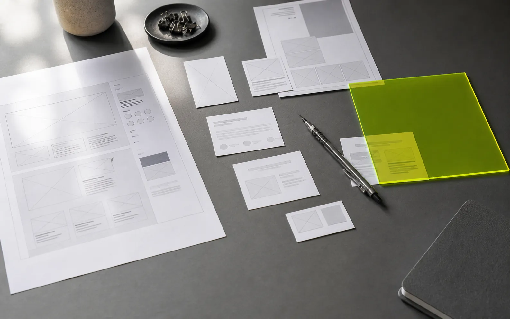

完整文档结构
导航、主内容、语义化分区和页脚都保留在同一份 HTML 中。
<section class="hero">
<h1>可编辑标题</h1>
<p>可编辑说明</p>
</section>
这个示例覆盖了常见页面结构，可以验证选择、拖拽、样式调整、响应式布局和资源加载。
导航、主内容、语义化分区和页脚都保留在同一份 HTML 中。
<section class="hero">
<h1>可编辑标题</h1>
<p>可编辑说明</p>
</section>修改颜色、间距、字体和圆角，结果会写回覆盖样式区域。
本地图片和样式资源通过安全地址映射加载，页面无需搬迁。
服务在后台完成检查和转换，使用者只需要打开返回的本地链接。
生成或选择一份包含 head 和 body 的完整 HTML 文档。
已有服务会直接复用，首次使用时下载并校验编辑器资源。
在画布中调整组件、文案和样式，同时监测磁盘文件变化。
保存前校验文件版本，避免覆盖 AI 或其他工具刚完成的修改。
“这份页面包含足够多的结构和视觉差异，可以真正验证编辑器是否好用。”
也可以替换图片、移动功能块、调整背景颜色，然后保存并检查源文件。